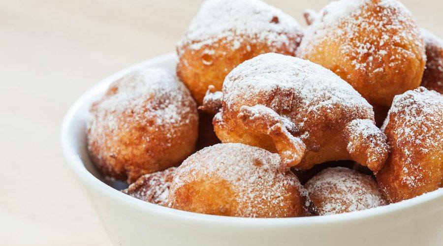

Fritule

Ball shaped fried dough prepared during the winter holidays and carnival
Similar to mini donuts, fritule or pašurate are a ball shaped fried dough made with flour, eggs, milk or yogurt, lemon zest, and brandy
To add some more flavor, you can add raisins or apple
Ingredients
- 400 g (14 oz) flour
- 2 eggs
- 2 teaspoons of baking powder
- 4 tablespoons sugar
- 360 g (12.6) yogurt
- salt, pinch
- 1 teaspoon lemon zest
- 2 tablespoons of rum
- Icing sugar for coating
- Vegetable oil, for frying